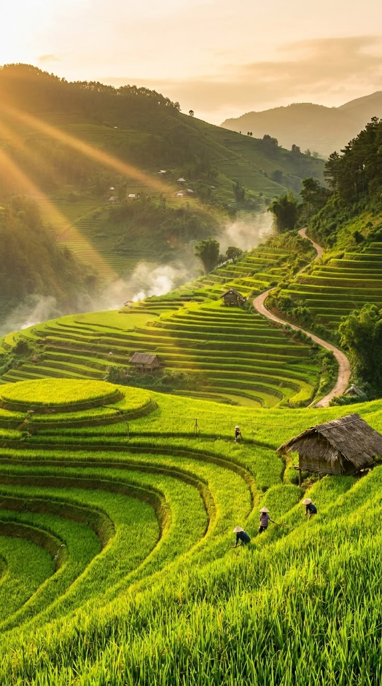
Pertanian
Hamparan sawah dan perkebunan yang menjadi salah satu potensi utama masyarakat Desa Amartya.
WELCOME TO AMARTYA
Sebuah desa di tengah pegunungan yang menyimpan keindahan alam, budaya, dan kehangatan masyarakat.
Jelajahi Desa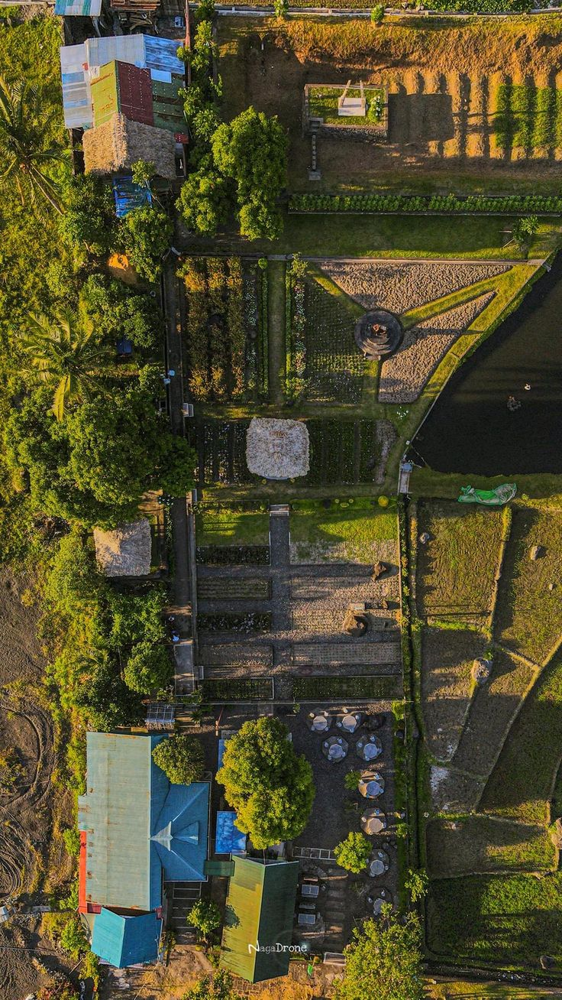
TENTANG KAMI
Desa Amartya merupakan gambaran desa pegunungan yang memiliki suasana asri, udara sejuk, serta pemandangan alam yang menenangkan.
Dikelilingi perbukitan hijau dan hamparan persawahan, Amartya menjadi tempat yang menggambarkan keselarasan antara alam, budaya, dan kehidupan masyarakat.
Kenali Potensi Desa →KEUNGGULAN DESA
Kekayaan alam dan sumber daya desa yang menjadi bagian dari kehidupan masyarakat.

Hamparan sawah dan perkebunan yang menjadi salah satu potensi utama masyarakat Desa Amartya.
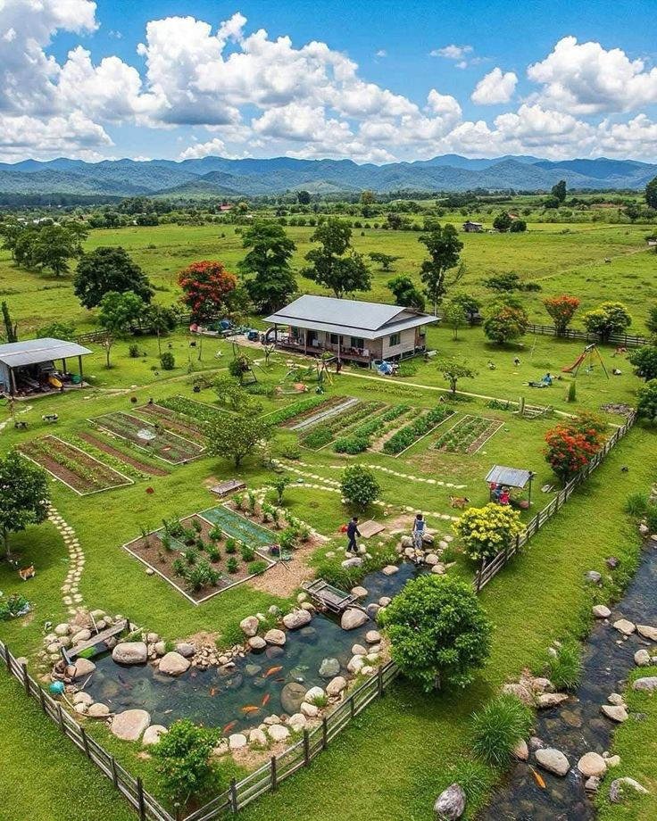
Lingkungan alam yang mendukung kegiatan peternakan serta pengembangan usaha masyarakat.
JELAJAHI AMARTYA
Nikmati suasana alam yang indah dan pengalaman menyenangkan di Desa Amartya.
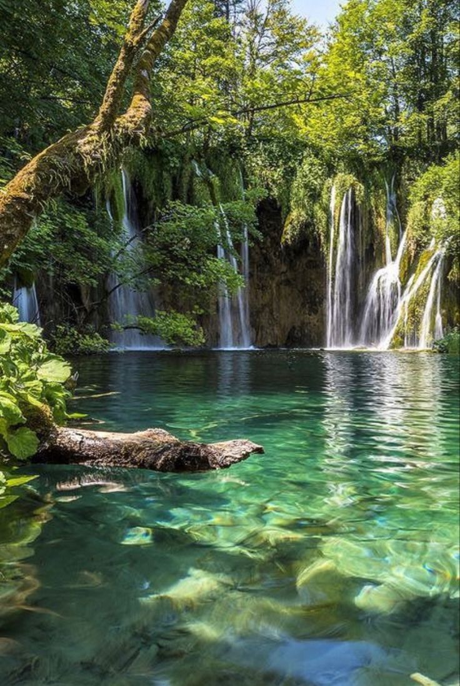
Keindahan air terjun yang dikelilingi pepohonan dan suasana hutan yang sejuk.
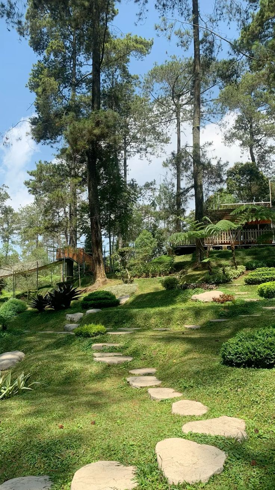
Tempat menikmati pemandangan perbukitan hijau dari ketinggian.
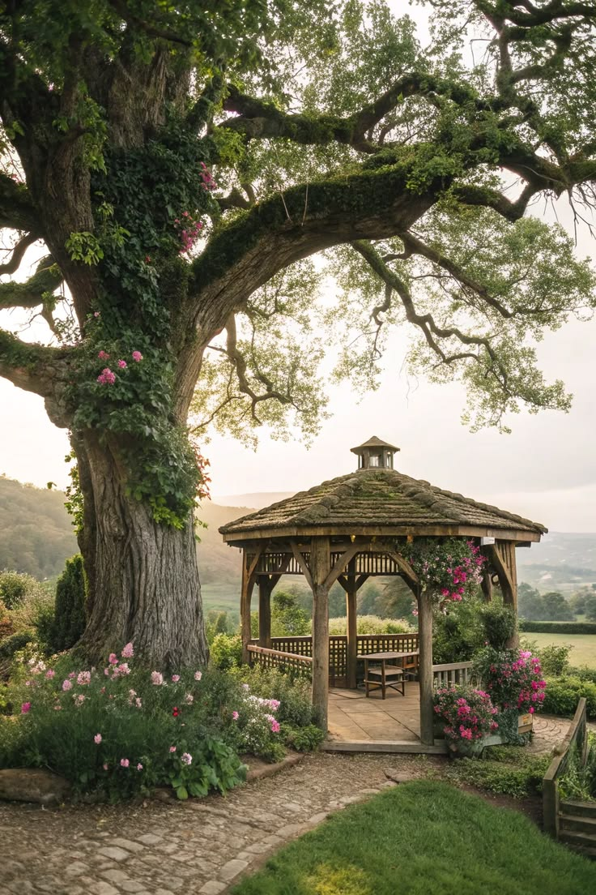
Tempat bersantai sambil menikmati keindahan alam sekitar desa.
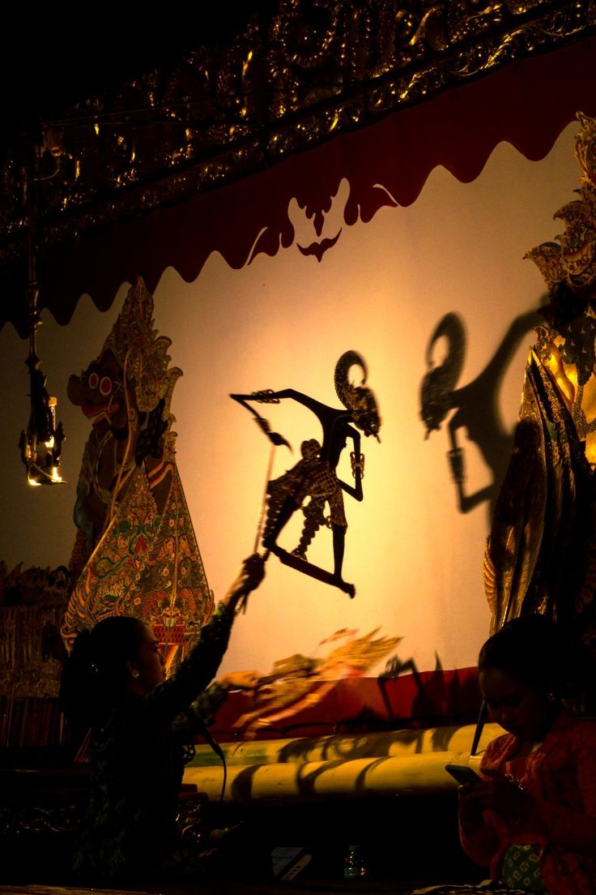
WARISAN MASYARAKAT
Kehidupan Desa Amartya juga diwarnai oleh kebersamaan masyarakat, kesenian, serta tradisi yang menjadi bagian dari identitas desa.
Budaya menjadi pengingat bahwa keindahan sebuah desa bukan hanya berasal dari alamnya, tetapi juga dari masyarakatnya.
USAHA LOKAL
Tempat singgah dan usaha lokal dengan suasana nyaman di tengah pegunungan.
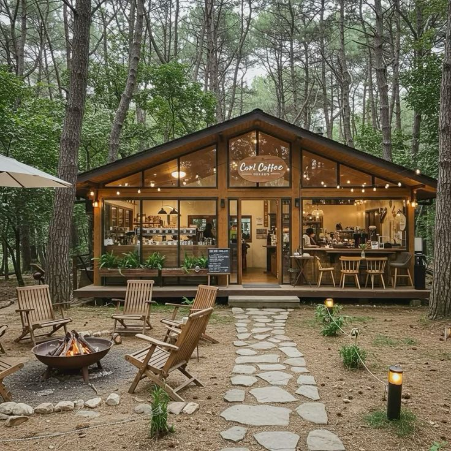
Kafe bernuansa alam dengan suasana nyaman dan pemandangan pegunungan.
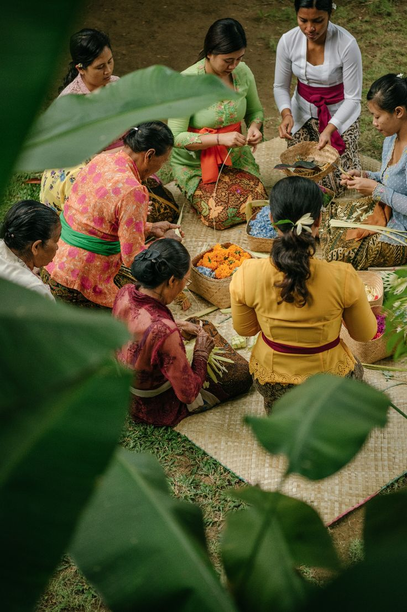
Berbagai kegiatan dan usaha lokal yang dikembangkan oleh masyarakat desa.
KOLABORASI DAN DUKUNGAN
Bersama perusahaan dan instansi yang mendukung pertanian, UMKM, pariwisata, serta kemajuan desa.
Dukungan ekonomi dan layanan keuangan desa.

Dukungan transaksi digital dan UMKM.
Dukungan keuangan dan pengembangan usaha.
Dukungan sektor pertanian dan hasil bumi.

Pengembangan pertanian berkelanjutan.
Pengembangan produk berbasis hasil alam.
.svg)
Pengembangan dan promosi wisata desa.
Dukungan pembiayaan dan pemberdayaan UMKM.
KEHIDUPAN DESA
Semangat gotong royong dan kebersamaan menjadi bagian penting dalam kehidupan masyarakat Desa Amartya.
MOMEN DI AMARTYA
Menikmati keindahan langit senja di antara pegunungan dan permukiman desa.
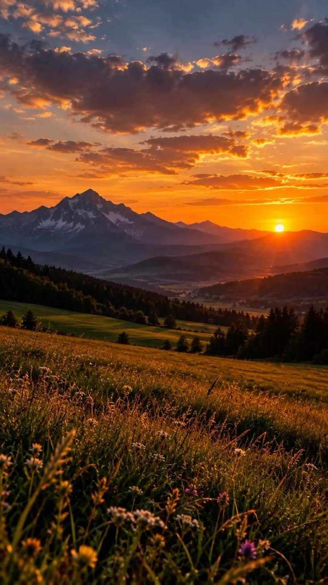
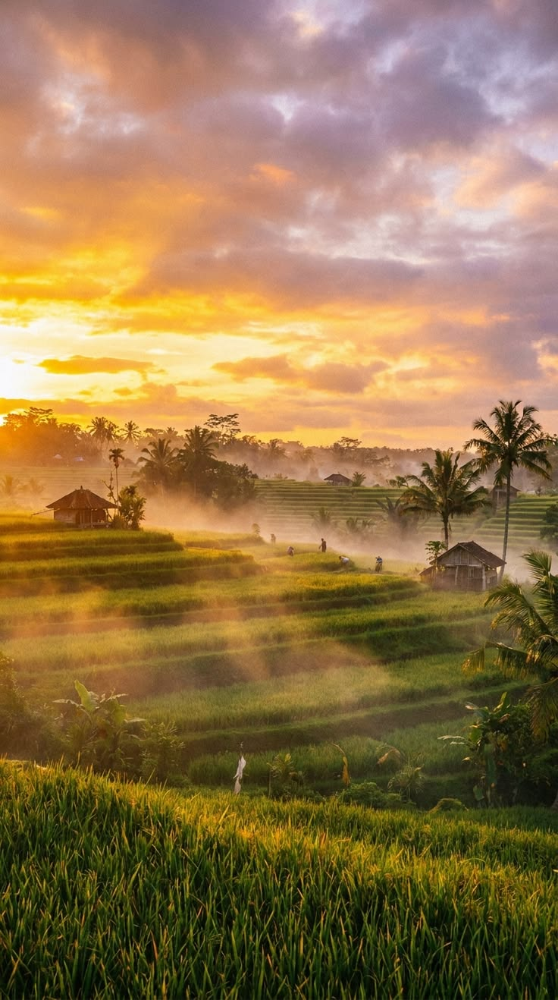
HUBUNGI KAMI
Ingin mengetahui lebih banyak tentang Desa Amartya? Hubungi dan ikuti media sosial kami melalui informasi berikut.
Desa Amartya, Kawasan Pegunungan
Lihat Google Maps →
info@desaamartya.com
Kirim Email →
@desa.amartya
Kunjungi Instagram →
@desa.amartya
Kunjungi TikTok →
@desaamartya
Kunjungi X →
Desa Amartya
Kunjungi Facebook →
Desa Amartya Official
Kunjungi YouTube →